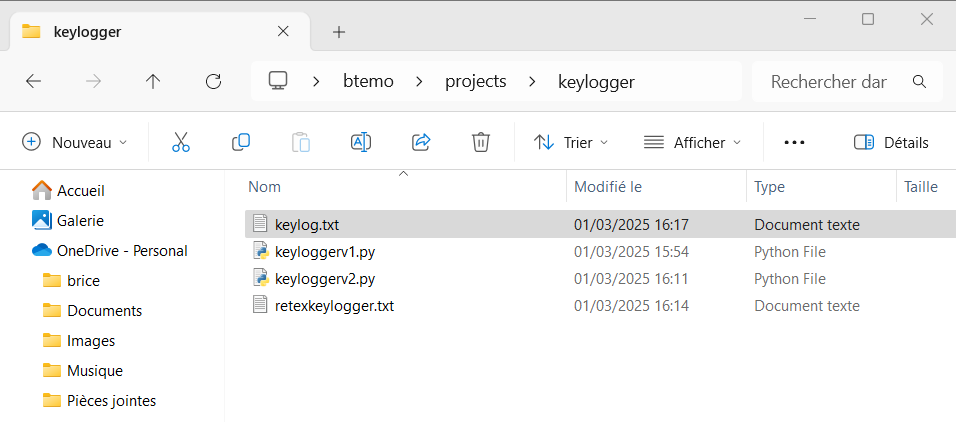
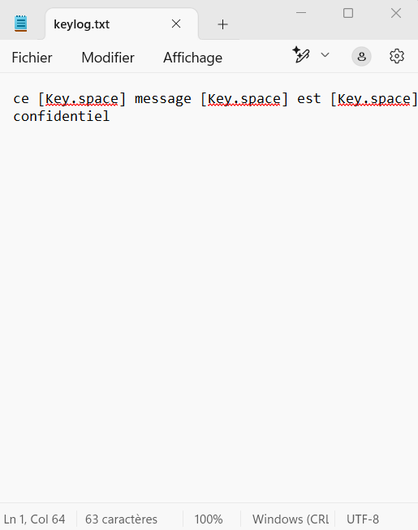

Ce projet a pour but premier d'appréhender le Python de manière plus ludique et pratique et ce en développant un keylogger.
Il permet également d'approfondir certains concepts en python tels que la gestion des événements clavier, la manipulation des fichiers, et l'utilisation de bibliothèques externes comme pynput.
Qu'est-ce qu'un keylogger ?
Keylogger ou "enregistreur de frappe" en français est un programme de capture de clavier, qui comme son nom l'indique a pour but d'enregistrer les touches frappées d'un clavier.
Pour développer notre programme on va utiliser Python comme dit précédemment, et plus particulièrement la bibliothèque pynput qu'on va installer à l'aide de pip.
Pourquoi ?
Car c'est une bibliothèque populaire pour intéragir avec le clavier et la souris.
Cette bibliothèque une fois installée on va se rendre sur notre IDE préféré, VSCode.
On crée alors un fichier qu'on va appeler keylogger.py qui sera ni plus ni moins que notre script python.
On va, dans un premier temps y importer le module "keyboard" de la bibliothèque "pynput" qui va nous permettre d'écouter les frappes du clavier.
Importation du module "keyboard"
Puis on va faire en sorte d'afficher à l'écran la touche qui est pressée.
La subtilité et qu'il existe 2 types de touches les "standards" (a, b, c, @...) et les spéciales (Enter, Shift, Delete...)
Il va falloir dans notre script renseigner les 2 types de touches et pour ce faire on va utiliser deux blocs, try et except.
try va nous permettre d'exécuter le bloc de code permettant d'afficher les touches standards.
Si c'est une touche "spéciale" qui est frappée, c'est alors le bloc except qui permettra d'afficher la touche spéciale frappée.
Blocs de code try et except
try:
print(f"Touche pressée : {key.char}")
except AttributeError:
print(f"Touche spéciale : {key}")
Enfin le module importé (keyboard) dispose également d'un listener que l'on va utiliser et qui nous permettra de surveiller les frappes du clavier.
Blocs de code du listener
listener.join()
Dans ce bloc de code "(on_press=on_press)" signifie qu'à chaque fois qu'une touche est pressée la fonction on_press est exécutée.
De plus, "listener.join()" est indispensable car il permet de rester en attente des entrées clavier, sans cette ligne le script s'arrêterait immédiatement après son lancement.
Il faudra dans un premier temps décommenté les lignes suivantes "cluster.name", "node.name" et "http.port", en revanche il faudra modifier la ligne network.host en y ajoutant notre IP publique.
Actuellement nos touches sont capturées !
On peut désormais aller plus loin et faire en sorte que les touches frappées soient stockées au sein d'un fichier, intéressant !
Pour ce faire on va modifier le script en spécifiant le fichier où stocker les frappes de clavier et dans la fonction on_press on va ajouter un bloc de code permettant d'ouvrir le fichier qui va recevoir les touches, enregistrer les touches "standards" au sein d'un bloc try et dans un bloc except on va enregistrer les touches dites "spéciales"
Cela nous donne ceci :
Code final keylogger
log_file = "C:/Users/brice/projects/keylogger/keylog.txt" # Nom du fichier où stocker les frappes
def on_press(key):
try:
with open(logs_file, "a") as f: # Ouvre le fichier en mode ajout
f.write(f"{key.char}") # Enregistre les touches standards
except AttributeError:
with open(log_file, "a") as f:
f.write(f" [{key}] ") # Enregistre les touches spéciales entre crochets
with keyboard.Listener(on_press=on_press) as listener:
listener.join()
Si on lance désormais notre script on s'aperçoit que dès lors que l'on touche au clavier, nos frappes sont bien enregistrées au sein d'un fichier "keylog.txt"  
Notre keylogger est désormais fonctionnel !
Et ensuite ?
Effectivement ce n'était que lapremière phase du projet, l'objectif final est de simuler un scénario d'attaque en utilisant ce keylogger (Red Team) et de répondre défensivement à celle-ci (Blue Team).
Plus concrètement côté Red Team, l’objectif est de comprendre comment un attaquant pourrait exploiter ce keylogger dans un scénario réel (exécution du keylogger, stockage des frappes de manière discrète, et éventuellement son exfiltration des données).
(Une version "pour aller plus loin" de ce projet consisterait à créer un workflow de "réponse" à l'alerte qui par exemple isolerait la machine hôte du réseau).
Côté Blue Team cette fois-ci le but sera de détecter et bloquer efficacement ce keylogger. Cela implique potentiellement l’utilisation d’EDR, d’outils de supervision et de SIEM, ainsi que la mise en place de règles de détection basées sur des comportements suspects.
Prochainement : Tester, contourner, détecter et bloquer notre propre keylogger🔥